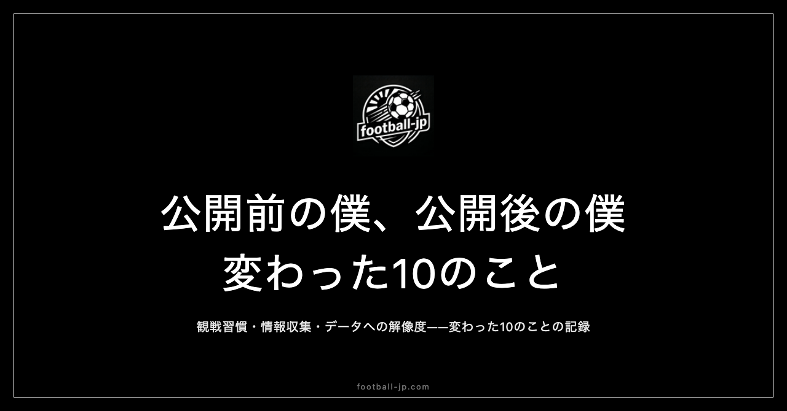

football-jp公開前後で変わった10のこと
サイトを公開する前と後では、日常のなかにあるサッカーの関わり方が変わった。観るだけだったものに「管理する」という行為が加わり、使う場所も、考え方の入口も、少しずつ違ってきた。football-jp.comを公開してから気づいた10の変化を記録する。

配信確認の場所が変わった
以前は「プレミアリーグ 日本 配信」といった語句をGoogle検索にかけ、複数のサイトを照合して答えを出していた。週に何度も同じ確認を繰り返す、非効率な習慣だった。
football-jp.comを公開してからは、そのひとつの操作がなくなった。サイトを開けば試合日時と配信先が並んでいる。積み重なると観戦前の準備時間はかなり短縮される。「作ってよかった」という実感の核心は、この「自分が不便に感じていたことが実際に解決された」という体験にある。
更新が止まるという不安が消えた
よく利用していた海外サッカーの情報サイトが、ある時期から更新されなくなった。代替を探し続けたが、長続きするものが見つからなかった。この経験がfootball-jpを作った最初の動機だった。
公開後は、更新が続くかどうかが自分の判断にかかっている。「情報源がいつ消えるかわからない」という不安は、自分が情報源になることで構造ごと消えた。これは精神的な変化として想定より大きかった。
試合前の5分の使い方が変わった
キックオフ前の準備として、複数のサイトやアプリを開いてスタメン情報や試合時間を照合する作業があった。5〜6箇所を巡回して情報を頭の中で統合する作業は、試合への集中を削ぐ要因になっていた。
football-jpに情報がまとまってからは、この作業がほぼなくなった。試合前の5分の性質が「確認のための作業」から「試合を楽しみに待つ時間」に変わった。
選手データへの解像度が上がった
以前は選手の出場時間や試合結果を感覚的に把握していた。公開後は68人分のデータを継続的に管理することになり、選手ごとの出場傾向や試合数が自然に記憶に入るようになった。
変化が顕著なのは、怪我明けの選手の戻り方を見るときだ。「復帰した、よかった」という感想から、「怪我前に何試合続けて出ていたか」「復帰後のペースはどうか」という見方が自然に生まれるようになった。データを管理することは、観る視点を変える副作用がある。
深夜・早朝の起きる理由が増えた
以前は試合のあるときにだけ深夜・早朝に起きていた。公開後は「観るため」に加えて「確認するため」という役割が加わった。観戦と管理が一体化したことで、起きる理由が明確になった。
「ただ観ていた」から「観ながら動いている」への移行は、夜中に目を覚ます意味を変えた。
個人開発への見方が変わった
サイトを作るより前は、「個人で何かを公開する」は特別なスキルを持つ人のすることだという感覚があった。公開後にわかったのは、動機が「自分が不便に感じていることを解決する」であれば、それだけで一定のものは作れるということだ。
「完璧なものを公開する」と「使えるものを公開する」は別の目標だ。前者は達成時期が見えないが、後者はすぐに達成できる。football-jpを通じて「前者で十分だ」という確信が得られた。
数字が持つ意味の重さを知った
公開直後、アクセス解析の数字は「3」だった。以前はPVという指標を概念として知っていただけで、実感としての「誰かが来た」という感覚はなかった。
「3」という数字が意味するのは、「3人分の時間がこのサイトに使われた」ということだ。PV3でもPV300でも、「誰かが来た」という事実の質は同じだ。この感覚は、公開して初めて得られるものだった。
不便を受け入れる耐性がなくなった
以前は「これは不便だが仕方ない」と受け入れることが多かった。公開後は「不便なら自分で直せばいい」という発想が先に来るようになった。
この変化はサッカー以外の日常にも波及した。football-jpを作って公開した経験が、「不便を解消する方向へ動く」ハードルを全体的に下げた。
SNSでのサッカーの話の密度が変わった
以前は試合後に感想を投稿する程度だった。公開後は「このデータを見ると」という視点が加わった。「三笘薫が素晴らしかった」という感想に、「今シーズン○試合目のゴールで、スプリント回数も平均を上回った試合だった」という文脈が付くようになった。
データを持つということは、自分の言葉に根拠を持つということでもある。
続ける理由を言語化できるようになった
以前は「海外サッカーを観る理由」を問われれば「好きだから」としか答えられなかった。公開後は「日本人選手の活躍を追いかけるのが好きで、そのための仕組みを自分で作った」という答えが出るようになった。
「深夜に起きてまで観るのはなぜか」「毎日データを更新し続けるのはなぜか」——これらの問いに、「自分が使いたいサイトを自分で作り、それを維持しながら選手を追いかけている」という答えが持てる。「好きだから」という感情に、構造が生まれた。
「後」は今も続いている
10個の変化を並べると、「サッカーの楽しみ方」と「作ることへの考え方」の両方が変わっていることがわかる。football-jp.comを作った動機はシンプルだったが、公開によって得られたものは想定より広かった。
「前」と「後」の構図で書いてきたが、「後」は今日も動いている。公開から時間が経つほど「前」の記憶は薄れる。この記録は、「前」を忘れないために書いた。1年後に同じ問いを立てたとき、10個の変化がどう変わっているか——それを確認することも、続ける理由のひとつになっている。